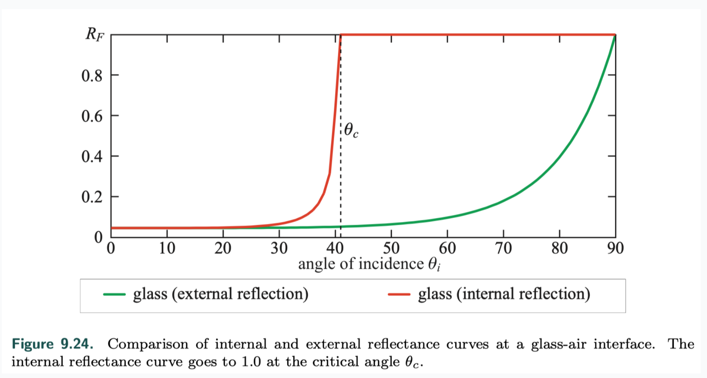

Real-Time PBR Summary
- Physics of Light
- The Camera
- The BRDF
- Local Illumination
- Fresnel Reflectance
- Microgeometry
- Microfacet Theory
- BRDF Models for Surface Reflection
- BRDF Models for Subsurface Scattering
- BRDF Models for Cloth
- Wave Optics BRDF Models
- Layered Materials
- Blending and Filtering Materials
Physics of Light
physical optics

- Light waves carry energy --> irradiance (d phi / d A) proportional to the square of the amplitudes
- constructive interference vs. destructive interference
particles
- isolated molecules
the scattered waves are incoherent and their energy adds linearly

- multi-molecule clusters the scattered light waves in each cluster are in phase and interfere constructively. This causes the scattered wave energy to add up quadratically
media
- homogeneous media
- non-homogeneous media
- scattering and absorption

surfaces
An object surface is a two-dimensional interface separating volumes with different index of refraction(IOR) values.
- transmitted wave and reflected wave
- have the same frequency as the incident wave
- the phase velocity—the speed the wave travels through the medium—changes proportionally to the relative index of refraction (n 1 /n 2 ). Since the frequency is fixed, the wavelength also changes proportionally to (n 1/n 2)
- Snell's law
subsurface scattering
- local vs. global subsurface scattering
- specular term models surface reflection
- diffuse term models local subsurface scattering
The Camera
pinhole
- a zero-size mathematical point and no lens
- restricts each point on the sensor surface to collect a single ray of light
physically based camera
- including a lens allows for the use of a larger aperture
- have a limited depth of field

The BRDF
definition
- bidirectional reflectance distribution function (BRDF)
f(l, v)

two constraints for BRDF
models of BRDF
- Lambertian
BRDF is a constant

- others

Local Illumination
为什么会多个pi，感觉不合理啊，跟c_light的定义有关
Fresnel Reflectance
definition
The interaction of light with a planar interface between two substances follows the Fresnel equations developed by Augustin-Jean Fresnel.
assumption
The surface is assumed to not have any irregularities between 1 light wavelength and 100 wavelengths in size.
reflection vs. refraction
- reflection
- direction

- Fresnel reflectance F The amount of light reflected (as a fraction of incoming light) is described by the Fresnel reflectance F, which depends on the incoming angle.
- direction
- refraction depends on the refractive indexes(n_1, n_2) of substances on the two sides of the surface
External Reflection
physics
External reflection is the case where n1 < n2. eg. from air to object
mathematical model

Typical Fresnel Reflectance Values
dielectrics
 For unknown dielectrics, 0.04 is a reasonable default value, not too far off from most common materials.
For unknown dielectrics, 0.04 is a reasonable default value, not too far off from most common materials.
metals
Recall that metals immediately absorb any transmitted light, so they do not exhibit any subsurface scattering or transparency. All the visible color of a metal comes from F0 .
semiconductors
fresnel reflectance values in water
parameterizing fresnel values
- using metallic to represent specular color F0 or the diffuse color in one texture
- no materials have values of F 0lower than 0.02, values of F0 below 0.02 are used to “turn off” Fresnel edge brightening
Internal Reflection
Internal reflection happens when n1 > n2. eg. traveling in the interior of a transparent object and encounters the object’s surface total internal reflection when outcoming angle is larger than 90° 
Microgeometry
microgeometry on specular reflectance
- reflectance
- shadowing and masking

- interreflection
microgeometry on subsurface reflectance
Microfacet Theory
definition
- The theory is based on the modeling of microgeometry as a collection of microfacets.
- Each of these tiny facets is flat, with a single microfacet normal m
- diffuse/specular/diffraction micro-BRDF
modeling
NDF
statistical distribution of the microfacet normals m
masking and shadowing function
- G1(m, v), the fraction of microfacets with normal m that are visible along the view vector v.

- Heitz, Eric, “Understanding the Masking-Shadowing Function in Microfacet-Based BRDFs"
- Smith masking function
- overall macrosurface BRDF
- joint masking-shadowing function G2(l, v, m)

BRDF Models for Surface Reflection
The specular BRDF terms used in physically based rendering are derived from microfacet theory.
half vector

specular BRDF

- Walter, Bruce, Stephen R. Marschner, Hongsong Li, and Kenneth E. Torrance, “Microfacet Models for Refraction through Rough Surfaces,” Rendering Techniques 2007, Eurographics Association, pp. 195–206, June 2007.
NDF
isotropic NDF
- Beckmann NDF

- comparison
 GGX has narrower peaks than Beckmann, as well as longer “tails” surrounding those peaks, which create the appearance of a haze or glow around the core of the highlight.
GGX has narrower peaks than Beckmann, as well as longer “tails” surrounding those peaks, which create the appearance of a haze or glow around the core of the highlight. - other NDFs

anisotropic NDF
The microfacet normal m needs to be transformed into the local frame or tangent space defined by the normal, tangent, and bitangent vectors, respectively, n, t, and b.


multiple-bounce surface reflection
The microfacet BRDF framework does not account for light that is reflected (“bounced”) from the microsurface multiple times. This simplification causes some energy loss and over-darkening, especially for rough metals
- Kulla, Christopher, and Alejandro Conty, “Revisiting Physically Based Shading at Imageworks,” SIGGRAPH Physically Based Shading in Theory and Practice course, Aug. 2017.
BRDF Models for Subsurface Scattering
BRDF models for local subsurface scattering, or diffuse surface response, in opaque dielectrics.
subsurface albedo
- the ratio between the energy of the light that escapes a surface compared to the energy of the light entering into the interior of the material.
- can depend on wavelength, light reflecting diffusely will be colored from absorption by the pigment particles
- since dielectrics transmit most incoming light rather than reflecting it at the surface, the subsurface albedo is usually brighter and thus more visually important than the specular color F0
- subsurface albedo can be thought of as the result of a “race” between absorption and scattering
scale of subsurface scattering and roughness
The correct deciding factor for which type of BRDF model to use relates to the relative size of the surface irregularities and the subsurface scattering distances.
- top left --> diffuse micro-BRDF
- top right --> smooth-surface diffuse model
- bottom --> rough-surface diffuse model
smooth-surface subsurface models
- These are appropriate for modeling materials where the surface irregularities are smaller than the subsurface scattering distances.
- Diffuse shading is not directly affected by surface roughness.
- Lambertian
- consider the Fresnel effect
- Shirley, with perfect Fresnel mirror specular term

- Kelemen and Szirmay-Kalos, with any specular term

rough-surface subsurface models
- Disney
- Oren-Nayar
- a Lambertian micro-BRDF
- a spherical Gaussian NDF
- Torrance-Sparrow “V-cavity” masking-shadowing function
- Hammon
- consider interreflections with a two-bounce simulation
- surface irregularities are larger than scattering distances

BRDF Models for Cloth
Empirical Cloth Models
Uncharted 2 diffuse BRDF

Uncharted 4 diffuse term

Disney diffuse sheen term
Microfacet Cloth Models
Each of the cloth models we have seen so far are limited to specific types of fabric.
Game The Order: 1886
Imageworks

Micro-Cylinder Cloth Models
The micro-cylinder models used for cloth are quite similar to those used for hair.
- Kajiya and Kay Model
- DreamWorks relatively simple and artist-controllable microcylinder model for fabric “Physically Based Shading at DreamWorks Animation,” SIGGRAPH Physically Based Shading in Theory and Practice course, Aug. 2017
- using actual hair BSDF models
Wave Optics BRDF Models
Geometrical optics, which treats light as propagating in rays rather than waves, is based on the assumption that any surface irregularities are either smaller than a wavelength or larger than about 100 wavelengths. Surface with nanogeometry need using wave nature of light and wave optics to model some effects.
Diffraction Models
- Huygens-Fresnel principle
every point on a wavefront (the set of points that have the same wave phase) can be treated as the source of a new spherical wave.


- real-world phenomena CD and DVD optical disks and certain insects
- researches
- Holzschuch, Nicolas, and Romain Pacanowski, “Identifying Diffraction Effects in Measured Reflectances,” Eurographics Workshop on Material Appearance Modeling, June 2015.
- Toisoul, Antoine, and Abhijeet Ghosh, “Real-Time Rendering of Realistic Surface Diffraction with Low Rank Factorisation,” European Conference on Visual Media Production (CVMP), Dec. 2017.
Models for Thin-Film Interface
- definition
Thin-film interference is a wave optics phenomenon that occurs when light paths reflecting from the top and bottom of a thin dielectric layer interfere with each other.
 The reason that the film needs to be thin for this effect to occur is related to the concept of coherence length. This length is the maximum distance by which a copy of a light wave can be displaced and still interfere coherently with the original wave. This length is inversely proportional to the bandwidth of the light, which is the range of wavelengths over which its spectral power distribution (SPD) extends.
The reason that the film needs to be thin for this effect to occur is related to the concept of coherence length. This length is the maximum distance by which a copy of a light wave can be displaced and still interfere coherently with the original wave. This length is inversely proportional to the bandwidth of the light, which is the range of wavelengths over which its spectral power distribution (SPD) extends. - real-world phenomena soap bubbles and oil stains
- researches
- Drobot, Michal, “Practical Multilayered Materials in Call of Duty Infinite Warfare,” SIGGRAPH Physically Based Shading in Theory and Practice course, Aug. 2017
- Belcour, Laurent, and Pascal Barla, “A Practical Extension to Microfacet Theory for the Modeling of Varying Iridescence,” ACM Transactions on Graphics (SIGGRAPH 2017)
Layered Materials
clear coat
- realization
- Disney
- UE
- PIxar
- Dreamworks
- Imageworks
- properties
- The most notable visual result of a clear-coat layer is the double reflection resulting from light reflecting off both the clear-coat and the underlying substrate.
- tinted clear-coat caused by absorption depends on the length of the path length that light travels which is view-dependent
- different layers could have different surface normals
layered material models
Drobot, Michal, “Practical Multilayered Materials in Call of Duty Infinite Warfare,” SIGGRAPH Physically Based Shading in Theory and Practice course, Aug. 2017.

Blending and Filtering Materials
Material Blending
Material blending is the process of combining the properties, i.e., the BRDF parameters, of multiple materials.

Material Filtering
Filtering Normals and Normal Distributions

{kind=link}
{kind=link}
{kind=link}
{kind=link}
{kind=link}
{kind=link}
{kind=link}
{kind=link}
{kind=link}
{kind=link}
{kind=link}
{kind=link}
{kind=link}
{kind=link}
{kind=link}
{kind=link}
{kind=link}
{kind=link}
{kind=link}
{kind=link}
{kind=link}
{kind=link}
{kind=link}
{kind=link}
{kind=link}
{kind=link}
{kind=link}
{kind=link}
{kind=link}
{kind=link}
{kind=link}
{kind=link}
{kind=link}
{kind=link}
{kind=link}
{kind=link}
{kind=link}
{kind=link}
{kind=link}
{kind=link}
{kind=link}
- normal filtering solutions
- sparkly appearance
- render sparkling snow in the game Disney Infinity 3.0
Bowles, Huw, and Beibei Wang, “Sparkly but not too Sparkly! A Stable and Robust Procedural Sparkle Effect,” SIGGRAPH Advances in Real-Time Rendering in Games course, Aug. 2015.
- Zirr, Tobias, and Anton Kaplanyan, “Real-Time Rendering of Procedural Multiscale Materials,” Symposium on Interactive 3D Graphics and Games, Feb. 2016.
- render sparkling snow in the game Disney Infinity 3.0
Bowles, Huw, and Beibei Wang, “Sparkly but not too Sparkly! A Stable and Robust Procedural Sparkle Effect,” SIGGRAPH Advances in Real-Time Rendering in Games course, Aug. 2015.
{kind=link}
{kind=link}